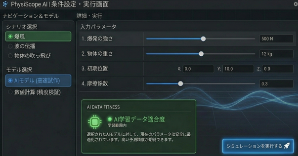
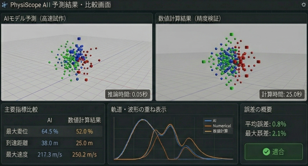
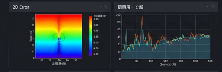

高速な試作支援
条件を変更するたびに重い数値計算を回さずに、AIで即座に挙動を確認できます。 ゲーム開発における調整作業を効率化できます。
PhysiScope AI は、物体の軌道や波の広がり、爆風による挙動などの物理現象を、 事前学習済みAIモデルによって高速に予測・可視化する支援ツールです。 条件を入力すると、AIが即座に物理挙動をアニメーション表示し、 さらに通常の数値計算結果との比較、誤差解析、感度解析を通じて、 その予測を安心して使えるかまで確認できます。 ゲーム開発における物理表現の試作と調整を効率化し、 高速な開発支援と品質確認の両立を目指したアプリです。

このページでは、対象とする物理現象と入力条件を設定します。 たとえば爆風の強さ、物体の重さ、初期位置、摩擦係数などを調整し、 どのAIモデルで予測するかを選択できる構成にしています。

条件を入力すると、AIが物理挙動を即座に予測し、 アニメーションとして可視化します。さらに、通常の数値計算結果も並べて表示し、 速度と妥当性の両面から比較できるようにしています。

AI予測と数値計算の差を分析し、この条件でAIを使ってよいかを判断するページです。 誤差ヒートマップ、時系列の誤差推移、入力条件に対する感度を表示し、 単なる高速化ではなく、実運用可能な技術として評価できるようにしています。
物理挙動の高速試作ツールにとどまらず、予測の信頼性まで確認できる点が特徴です。
条件を変更するたびに重い数値計算を回さずに、AIで即座に挙動を確認できます。 ゲーム開発における調整作業を効率化できます。
AI予測だけでなく、従来の数値計算結果も並べて確認できるため、 高速性と妥当性を同時に示すことができます。
誤差の発生箇所や入力条件への依存性を可視化することで、 AIモデルの振る舞いをより深く理解できます。